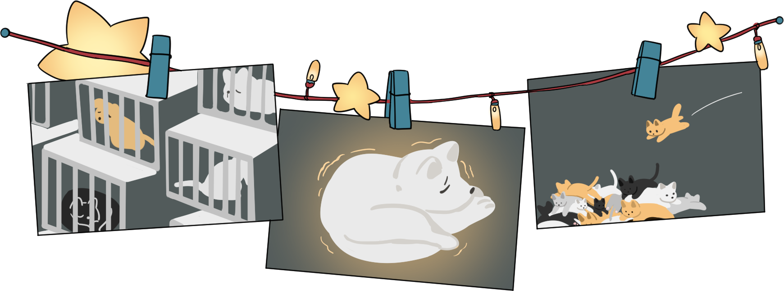

귀여운 강아지들로 가득한 '쇼윈도'는 항상 사람들의 시선을 사로잡아요. 바로 펫
샵 이라는 곳이에요.우리의 가까운 곳에서 볼 수 있고,간단하게 동물을 데려올
수 있는 곳이에요. 하지만 동물을 사랑하는 우리는 펫샵보다는 입양을 지향 해보
는것이 어떨까요? 그 이유를 설명해드릴게요.
펫샵의 어두운 면

강아지 공장?
티컵 강아지?
품종묘 대란?
펫샵을 가득 채운 귀여운 강아지들은 모두어디서 올까요? 바로 '강아지 공장' 에서 와요.
바로 강아지를 공장처럼 생산 해내는 곳이에요. 이곳의 강아지들은 대부분 위생관리가
되지않아 평생 좋지
않은 환경에서 임신과 출산을 반복하고, 피부병을 달고 살아야 해요.
그렇게 해서 태어난 아기 강아지들은 피부병, 알레르기, 유전병이 있을 수 있어요.
티컵 강아지, 찻잔에 들어갈 정도로 작은 강아지 라는 뜻이에요. 펫샵에 있는 강아지들이 대부분 모두 작아요.
이 강아지들은 작은 종류인것이 아니라 어미개와 너무 빨리 떼어놓거나 고의적으로 배급하는
음식의 양을 최대한 적게 배식해서 발달이 아직 안되거나 더뎌진 거랍니다.
모든 생명체들은 음식을 먹고, 생명활동을 하면 본래의 크기로 자라나게 되어있어요.
최근 고양이들의 수요가 많아지고 고양이에대한 인식이 좋아지면서 반려동물로 고양이를 선택하는
사람들이 많아지고 있어요. 하지만 인기있는 품종만 공장에서 생산하고, 그중에는 결
국 버려지는 고양이들이 정말 많답니다. 또 품종묘들 중 대부분은 유전병을 지니고 있음에도
그 사실을 인지 하지 못한 채 데려가는 사람들이 정말 많아요.